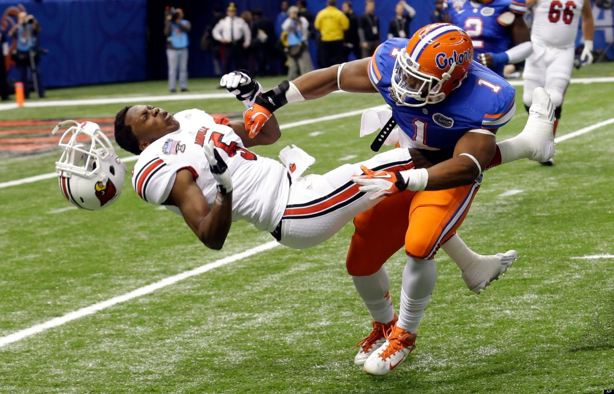

This is a header
| This | is a row |
| This is | a second row |

Send an e-mail to us!
Holy crap I don't need quotes?OMG New line!
After 45 years creating a legacy for Eaton's high school, baseball coach Jim Danley's iconic run is officially over, the small town's school district announced Friday afternoon.
About a month ago, the district gave Danley a 13-point improvement plan for the upcoming season, saying he needed to sign it or he would be removed as coach.
"After giving Mr. Danley a reasonable opportunity to consider his position regarding the performance improvement plan, Mr. Danley did not respond within the communicated deadline," the district said in a statement.
RELATED: Jim Danley responds to Eaton High posting opening for baseball coach
District officials say they are moving forward in a search for a new coach.
"I'm disappointed to hear of the decision to post the opening for the head baseball coaching job at Eaton High School," Danley said in a statement. "I have believed over the last few weeks that a process was in place through which an agreement could be reached in which I would be able to remain as head coach."
Danley also said "alternative language for a performance plan had been discussed in which I was in agreement," adding that he's still open to a "mutually satisfactory agreement."
He called his coaching career in Eaton "a great privilege" and something he would like to continue .
"It's too bad," said Steve Schlotthauer, a Danley proponent who has vocally supported the former coach. "He was there so long."
This is a paragraph, I love typing a lot for this to be a super awesome broseph